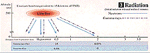
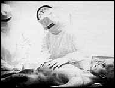
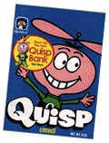

Ten sites that caught our fancy this month.
1
The Marilyn Pages
http://ionet.net:
80/~jellenc/marilyn.html
This site offers a haunting tribute to the sad, troubled life of Marilyn Monroe. With generous text and excellent images of the ethereal star in an understated design, creator Ellen Cotton paints a vivid portrait of the lonely icon. Her site is a refreshing change from those that nearly shock a reader with alarming backgrounds or lack any organization. These pages link to Cotton's home page, a well- designed launch pad for eclectic, well-executed pages.
2
The Atomic Bomb
WWW Museum
http://www.csi.ad.jp/
ABOMB/index.html
 This Japan-based site clearly and respectfully offers an interesting look at the bombing of Nagasaki and Hiroshima with haunting images and stories of survivors. The site also offers a "walking tour" of Peace Park and monuments in both cities. The text breaks into easy-to-read narratives to weave together a complete story of two cities thrown forever into the limelight of history. Although created by Japanese authors, the site does not place any blame on the United States for its actions.
Alien Autopsy Face Off
How to Make an Alien
http://www.trudang.com/autopsy.html
 Rumors about UFOs and the infamous Roswell alien autopsy abound on the Internet. At this exhaustive site compiled by special effects epxert Trey Stokes, you can get the lowdown on the videotape aired last fall by Fox that supposedly documents an actual autopsy of an alien recovered in the 1947 crash of a flying saucer in the desert outside Roswell, N.M. Stokes points out inconsistencies and offers explainations on how the whole thing could be hoaxed through his five-part "How to Make an Alien" instructions. The site offers links to find out what other experts think of the footage.Explicit photos, not for the queasy.
The Evan Strikes Back
http://www.cs.utk.edu: 80/~ereynold/cgi-bin/sw.html
Immediately confirming his good taste by centering his trilogy page on The Empire Strikes Back, Evan Reynolds' homage to Star Wars marks an impressive labor of love with a sardonic edge. His Cut Scenes page even throws in a humorous list of fake edits, including "The Dinner Scene on Bespin where Lando pulls out the Colt 45" and "The Outrageous Ernie and Bert cantina shot." Don't miss Dinner with Darth -- where you get to see David Prowse unmasked.
Two-Minute Warning
http://www.dtd.com/tmw/tmw.cgi
This pleasant diversion from Team NFL lets football fans win stuff like mini-helmets signed by Barry Sanders (who, the game says, will lead the Lions to the Super Bowl, showing us that trivia buffs aren't necessarily good prognosticators). Most fans have no real shot at winning, since the game pretty much requires eight Hail Marys for touchdowns, eight two-point conversions and seven kick-off recoveries in two minutes to even qualify. But the game itself is enough to justify an afternoon of procrastination.
The Unofficial Brady Home Page
Encyclopedia Brady
http://www.teleport.com/ ~btucker/bradys.htm
http://www.primenet.com/~dbrady
These closely linked sites pay an amazing, fact-filled salute to America's favorite unrealistic family of the 1970s. Included in the impressive Unofficial Home Page are the blueprints of the famous house (that show it's architecturally impossible), sound clips and a wacky free screen saver. The encyclopedia, created by Los Angeles Times writer David Brady, offers a shelf filled with tidbits about every aspect of Brady life.
Crunch, The Cereal Box Hall of Fame
http://www.ice.net/~crunch/
 Cruising the Web over a bowl of Froot Loops? Be sure to check out the Crunch Cereal Box Collection. The site's highlight is a gallery of vintage cereal boxes ranging from classics like the cavity-inducing Quisp to flashes-in-the-bowl like Sir Grapefellow that made the milk taste like a weak Merlot. Plus there's a connection to the Cereal FAQ where you can trace the history of the Lucky Charms marshmallows.
Internet Underground
Music Archives
http://www.iuma.com
No, we're not related to this site. Let's get that straight right now. They just have good taste in name selection. But this, one of the most heavily visited spots on the Web, is worth putting on your hot list as it offers a clearinghouse for alternative bands and independent labels. This impressive site provides exposure to bands that would normally have a difficult time gaining a national audience, much less access to an international arena.
NUKE
http://www.nuke.com
All right, allow us a moment for self-indulgence as we name the Web site dedicated to computer games, video games, movies, TVs, comic books and all other kinds of nifty stuff in a user-friendly format. From Sendai Media Group, the parent company of Internet Underground, this is a good place to spend a time. We'd say that even if we weren't so biased, we swear.
The Salvador Dali Museum
http://www.highwayone.com/dali
We highlight this site for its sense of fun. As the front page loads, you're warned, "Please, don't click on the flies or clocks." Of course, we did, and were subjected to shameless sales pitches for the St. Petersburg, Fla., museum's mousepad and other items. At $17.06, we passed on the pad, but we did download the free Dali wallpaper (comes in three styles) and took the surrealism quiz. This site does well reproducing the few images it does offer (one of which is amazingly huge in real life), and the site offers loads of information about the innovative artist and his work. We're hoping they offer a free screen saver next.